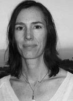

My work is mostly about color, the language of spirit and emotion. As Picasso once pointed out, there is no abstract art. My work originates in realism, then goes on to have fabulous adventures in places only my mind can see. Overcomplicated art bothers me, so I omit surplus details to focus on essential visual elements and color. I want my art to take the observer somewhere new, a place at once familiar and totally different; an oasis from ordinary.
Much of my imagery is drawn from my love of the natural world and a wish to convey a sense of sanctuary. My urban scenes are deeply colored by a sense of landscape. I focus on natural rhythms of shape and form found in landscapes, as I feel these patterns create a sense of harmony in composition. Even the most mundane or busy location can become a sacred place when the eye finds beauty there.
As a 3rd generation artist I was born with a paintbrush in hand. After many years my primary medium is still oil. Lately I have been doing a lot of printmaking with silkscreens. As a painter I was more familiar with the pigments of paint than with silkscreen inks, so I use acrylic paint to do my silkscreens. They are the best pigments, so they age well and dry rapidly. I do small limited editions and employ painterly techniques in my printmaking (each print is slightly different within an edition). The paper is an acid-free French Rag made out of 100% cotton, so no trees were sacrificed in it's making.
© 2010 Lisa Feather Knee